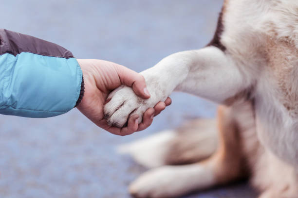
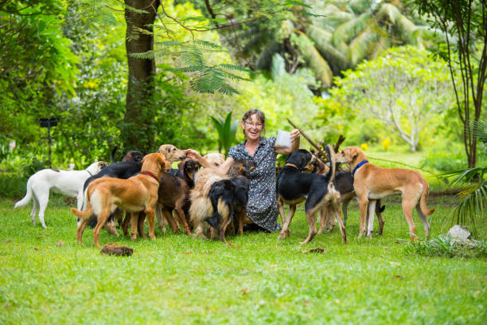
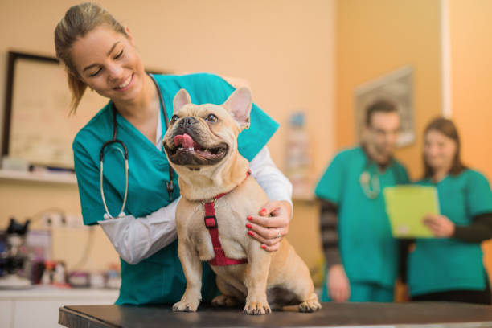
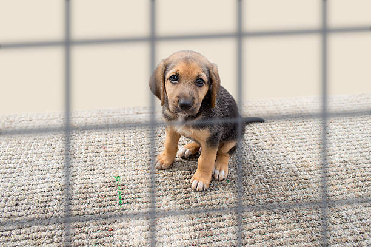

|  |
RescueWe take abandoned, abused, or stray pets and attempt to find suitable homes for them. Many rescue groups are created by and run by volunteers, who take animals into their homes and care for them—including training, playing, handling medical issues, and solving behavior problems—until a suitable permanent home can be found. Rescue groups exist for most pet types (reptile rescue, rabbit rescue or bird rescue), but are most common for dogs and cats. For animals with many breeds, rescue groups may specialize in specific breeds or groups of breeds. For example, there might be local rescue groups, hunting dog rescue groups, large-dog rescue groups, as well as general dog rescue groups. |
Adoption and Release
Pet adoption is an important aspect of animal welfare that helps in providing a second chance to homeless and abandoned animals. Adopting a pet not only gives them a loving home but also helps in reducing the burden on animal shelters and rescue organizations. In India, pet adoption has gained momentum in recent years, and more people are opting for adoption instead of buying pets from breeders or pet shops. We try to adopt homeless animals and provide them rescue and shelter and when we found a suitable permanent home for them , we release them. Importance of Pet Adoption in India:
Reducing the number of homeless animalsPromoting animal welfare Cost-effective Better for the environment |
 |
|  |
Medical AidPrinciples of Medical Aid include evaluation of the incoming animal at the time of intake to identify specific needs of the individual animal; preventive medicine measures such as vaccination and parasite treatment; testing for detection of prevalent infectious diseases; appropriate cleaning and disinfection to minimize disease transmission within the facility; stress management and reduction; and population management to ensure that the shelter operates within its capacity for care. We provide access to all animals for health and behavioral needs as soon as possible after arriving at the animal shelter. If possible, a detailed history should be taken from the surrendering party or anyone who knows the animal (ie, a neighbor or a prior owner identified by microchip scan). This triage helps to define the specific animal’s medical and behavioral needs. In some instances, the identified problems will be treated in the sheltering facility; in other cases, problems will be detailed so that the receiving party can provide care and treatment. |
Cruelty Prevention and EducationAnimals, similar to human beings, have the capability of comprehending physical and mental pain. Therefore, they can understand the severity of any physical or mental harm that is inflicted on them. This earth belongs to them as much as it belongs to us human beings. Thus, it is imperative that other living creatures are allowed to live and thrive just like us. With this vision, the Prevention of Cruelty Act, 1960 was passed; purporting to punish severely the persons indulging in cruelty against the animals, the establishment of an animal welfare board, identifying the acts amounting to cruelty against the animals, etc. According to Section 2(a) of this Act; animal refers to any living creature excluding a human being. Therefore, this definition is comprehensive and exhaustive. For animals, it refers not solely to mammals, but also includes birds, reptiles, etc. Illustration: tiger, deers, cheetah, dogs, cats, buffaloes, snakes, lizards, alligators, crocodiles, elephants, etc. Section 4 to 10 of this Act enshrines the provisions relating to the constitution, funding, and functioning of the animal welfare board. |
 |